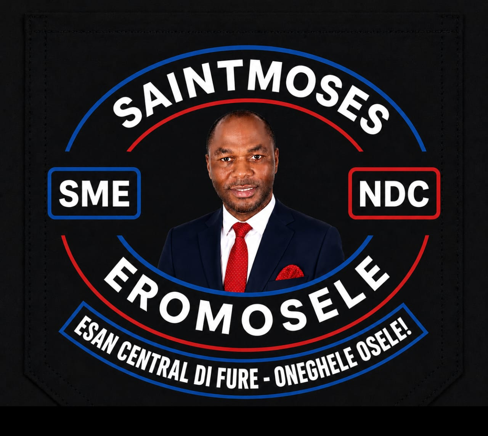

Security of lives and property
A coordinated, community-led approach to safety across every ward.
Official Campaign · NDC
Saintmoses Eromosele — businessman, administrator, author and community advocate — is standing for practical representation built on service, fairness, security and shared prosperity.

The Agenda
Eight focused commitments measured by what residents feel in daily life, not by speeches.
A coordinated, community-led approach to safety across every ward.
Pathways into work through training, apprenticeships and placement.
Access to tools, workspace and capital so local enterprise can scale.
Schools, scholarships and mentorship that meet young people where they are.
Reliable primary care, maternal health and support for the vulnerable.
Infrastructure that connects communities and unlocks productivity.
Open office hours, public reporting and accessible constituency channels.
Equitable attention to Irrua, Ewu, Opoji and Ugbegun without exception.
Four Kingdoms · One Constituency
Every community deserves respect, inclusion, development and effective representation.
Opportunities & Empowerment
Residents can register as job seekers, startup applicants, existing businesses seeking expansion, or newly freed apprentices needing tools and workspace support.
Digital Constituency Office
Register for opportunities, report a community need, volunteer your time, or reach out. Every message is read by the team.